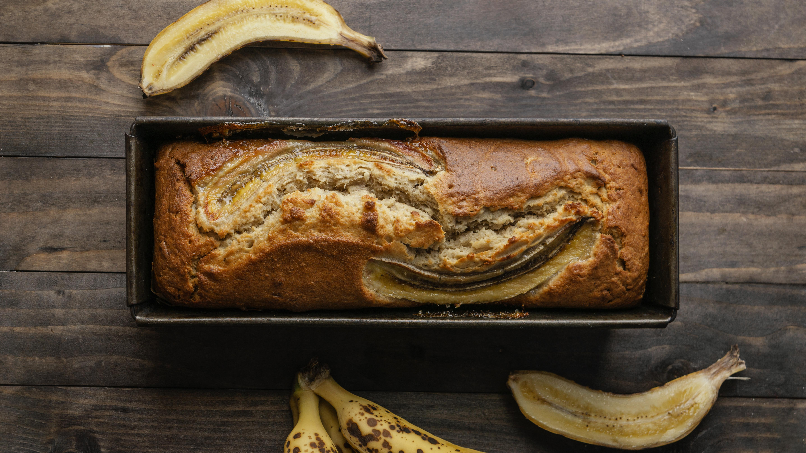

Banana Bread

Image by Freepik
Description
This banana bread recipe is easy to follow and you can adjust the ingredients as you need. You can make the dough without a mixer, all you need is a bowl and a spatula. If you want,
you can also add chopped walnuts, almonds or blueberry for flavor. This recipe uses baking soda as the dough risener to make nice moist banana bread!
Ingredients
- 2.5 over ripe bananas
- 8 tbs melted butter
- 1 tsp baking soda
- 1 tsp salt
- 1.5 cup sugar
- 1 cup all purpose flour
- 1 large egg
note: you may add optional ingredients like chopped nuts or reduce the sugar amount to your liking.
Steps
- preheat oven to 350 degree feirenheit
- mix in dry ingredients: flour, baking soda, salt, sugar together in a large bowl
- mash bananas and add in egg and melted butter, stir until mixed well
- pour in wet ingrediants to dry ingredients and stir until mixed
- add any optional ingrediants to batter and mix well
- pour batter into a bread pan and bake for 50-60 mins pr until a toothpick poked at the center comes out clean